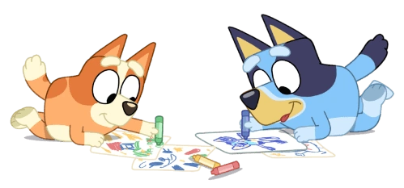
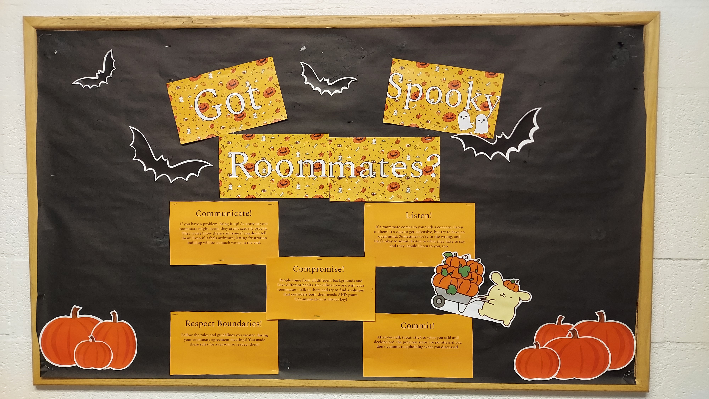

Welcome to Dewside
Bulletin Board Resource for Resident Assistants
Never fear! Feel free to use the ones I have already made. Just print these PDFs and cut them out as you please!
"Bluey" Seasonal Affective Disorder Board
Click here to view!
Don't Let Winter Get You All BLUEY! A board about SAD symptoms and ways to help treat it. Complete with Bluey characters to cut out and arrange across your board.
Got Spooky Roomates?
Click here to view!
An October board about conflict management with roommates! Graphics include pumpkins to make a pumpkin patch, bats, and Pompompurin! 